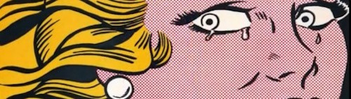

Contrary to popular belief, superheroes don’t only reside in comic books and films. They’re very alive in novels and poetry.
A game ratings board in Taiwan posted a page for Bioshock: The Collection, including a previously unreleased image of the box art.
*THIS ARTICLE CONTAINS SPOILERS ABOUT THE LAST SEASON OF GAME OF THRONES*
Lin-Manuel Miranda’s musical Hamilton has created some intense fandom around the American Revolution that has expanded into fanfic. Last year’s Yuletide fic exchange, designed for underrepresented fandoms with fewer than 100 works on the Archive of our Own (AO3), saw the debut of 57 new Hamilton fics.

Another week, another batch of links for our favorite fangirls. Here’s what we wrote, and what we enjoyed, from the tail end of January.